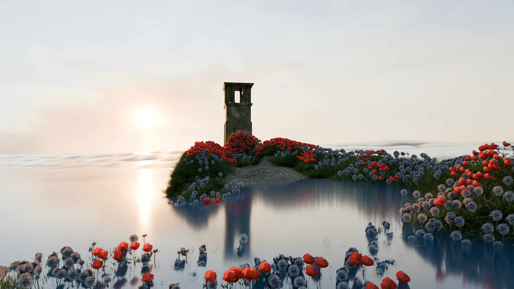
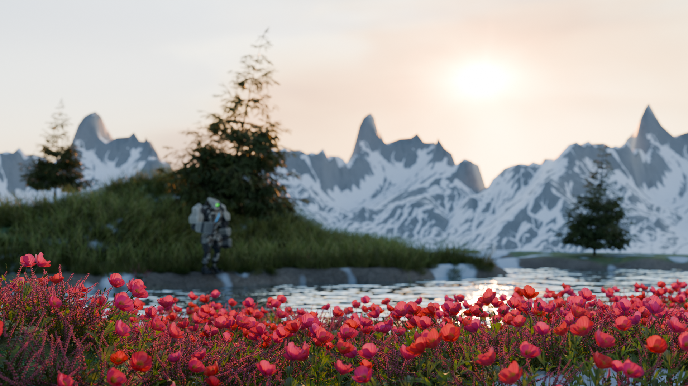
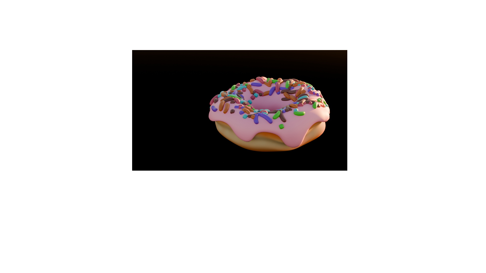

Main Projects / Blender / Environment Design
Scenery Design
Blender studies in landscape, imagined spaces and atmosphere, exploring composition, modelling, materials and lighting.
01 / Selected studies
Environments & visual studies






02 / Moving scene
Magic Realism Scene
A moving scene study in Blender.